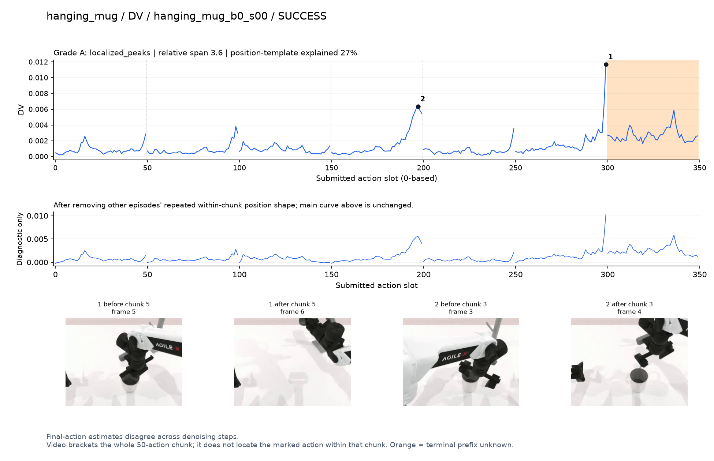
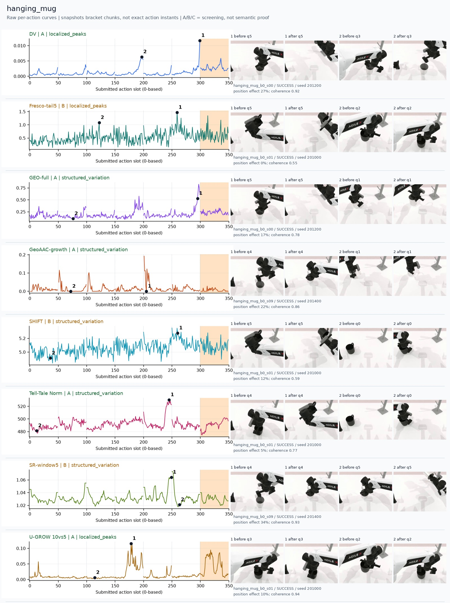
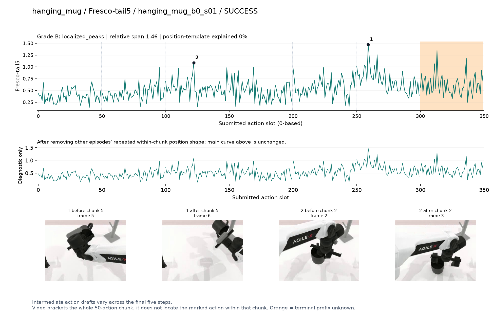
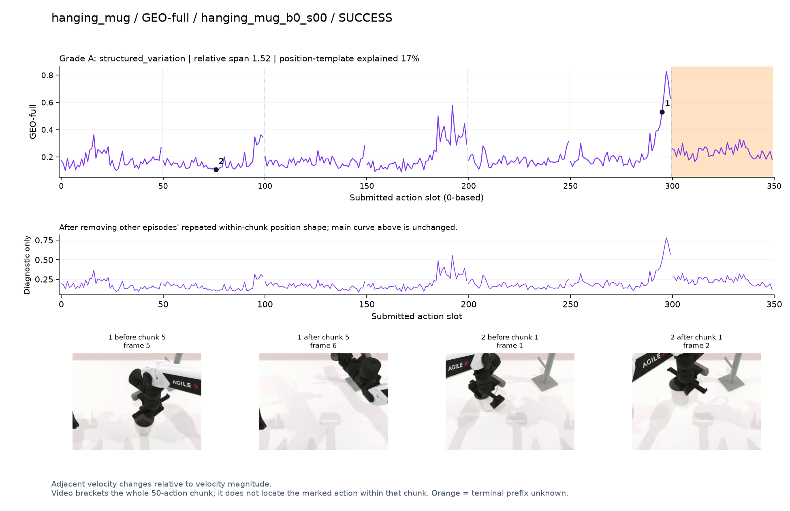
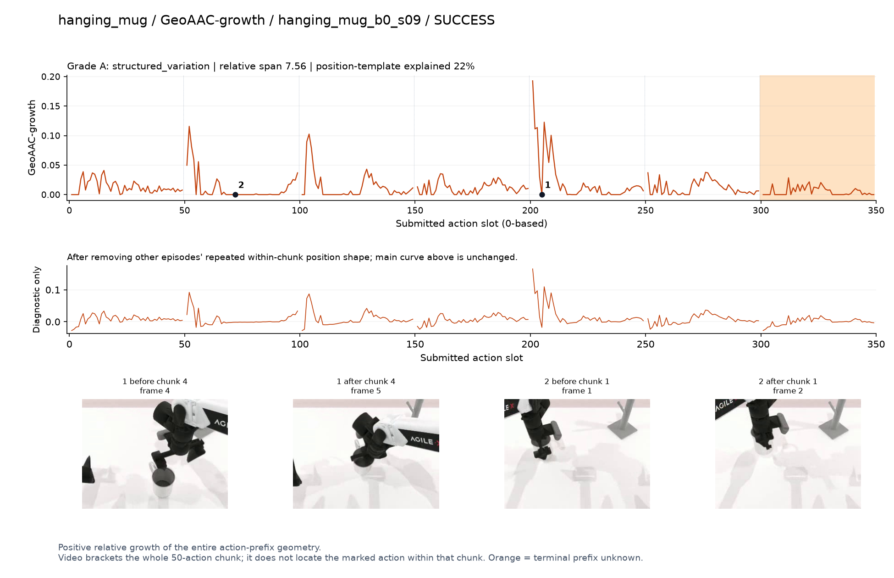
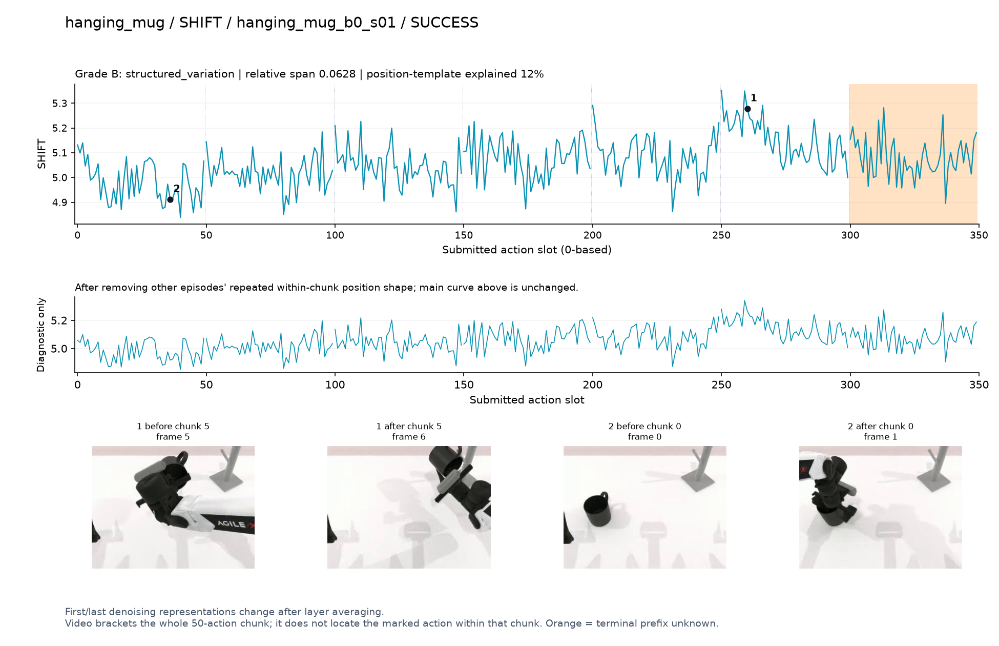
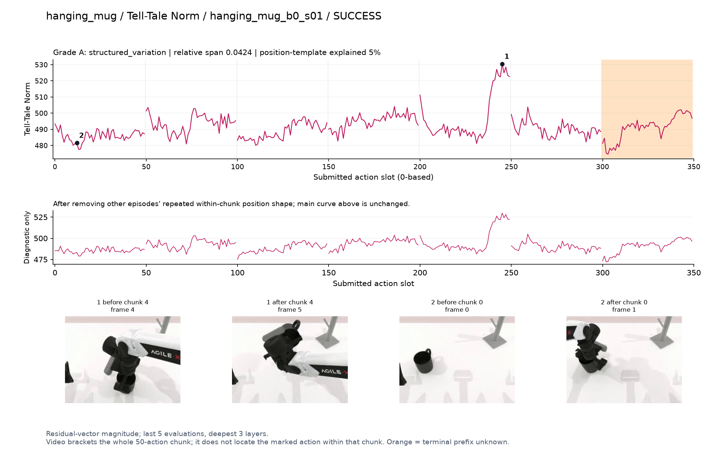
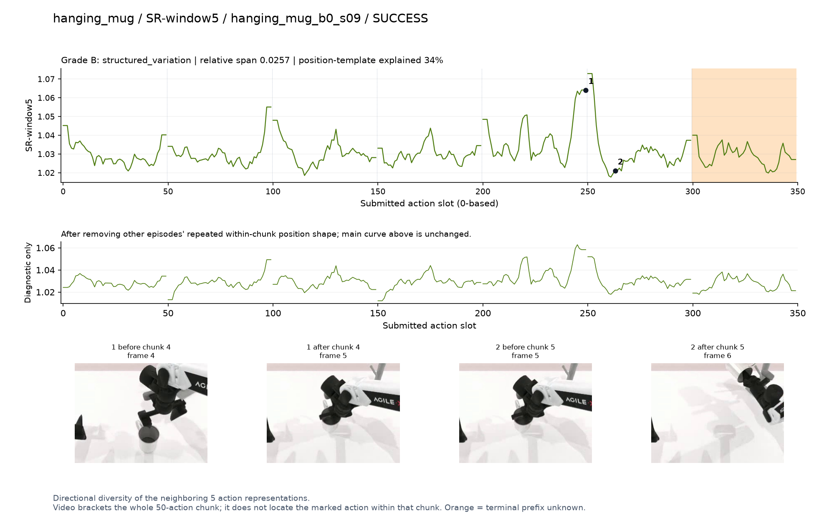
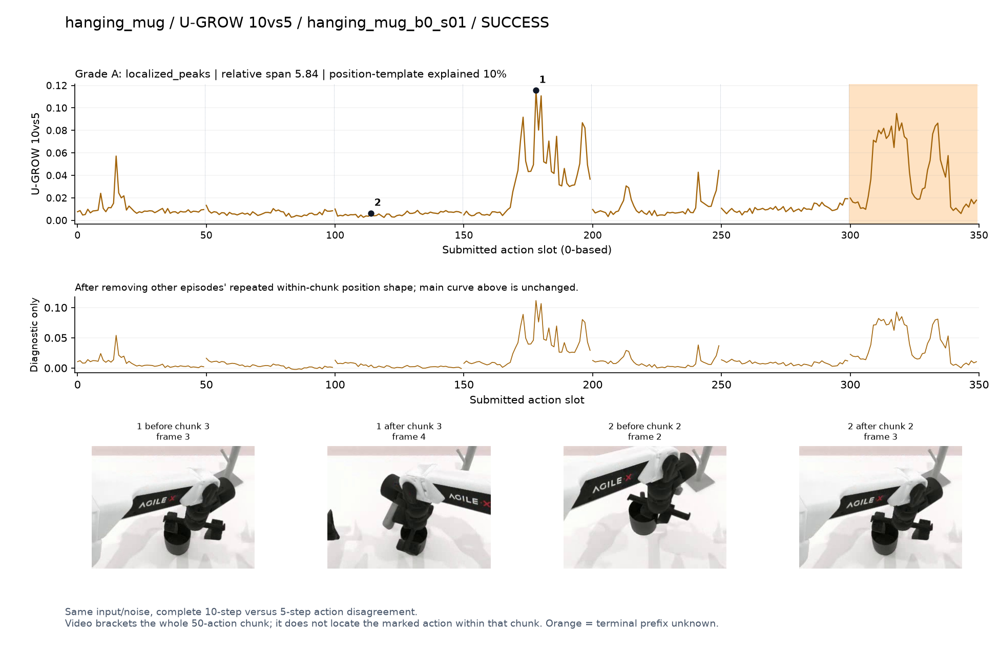

DV · A · localized_peaks
Final-action estimates disagree across denoising steps.
SVG · metadata
Only pre/post chunk frames were recorded. A visible stage transition is a candidate explanation, not proof of a contact instant. Main plots preserve every action score.
人工看图复核：dv [candidate] 候选：q3/q5持杯旋转、向挂架移动段升高；峰贴近chunk末端。
fresco [weak] 弱：逐动作抖动较密，未见可靠独立事件对应；全数据与噪声到最终动作距离高度相关。
geo [candidate] 候选：q5向挂架移动段升高；还未能确认挂上瞬间。
geoaac [weak] 弱：每chunk前段反复出现尖峰，挂杯事件特异性不清。
shift [weak] 弱：小幅抖动/阶段基线变化，未见可靠独立事件对应；路径长度混杂强。
norm [candidate] 阶段候选：q4拿起/转动杯体时幅度明显增大。
sr [confounded] 谨慎：q4末端主要峰接近边界。
ugrow [candidate] 候选：q3杯柄抓取/调整姿态附近局部高区。

Final-action estimates disagree across denoising steps.
SVG · metadata
Intermediate action drafts vary across the final five steps.
SVG · metadata
Adjacent velocity changes relative to velocity magnitude.
SVG · metadata
Positive relative growth of the entire action-prefix geometry.
SVG · metadata
First/last denoising representations change after layer averaging.
SVG · metadata
Residual-vector magnitude; last 5 evaluations, deepest 3 layers.
SVG · metadata
Directional diversity of the neighboring 5 action representations.
SVG · metadata
Same input/noise, complete 10-step versus 5-step action disagreement.
SVG · metadata